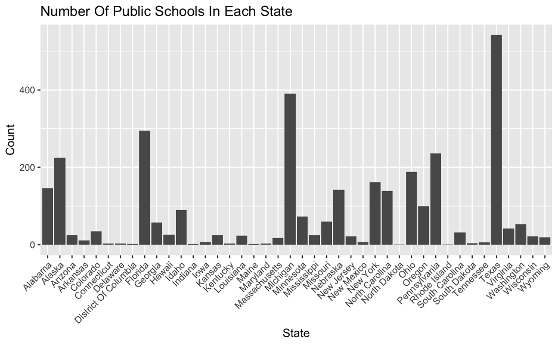
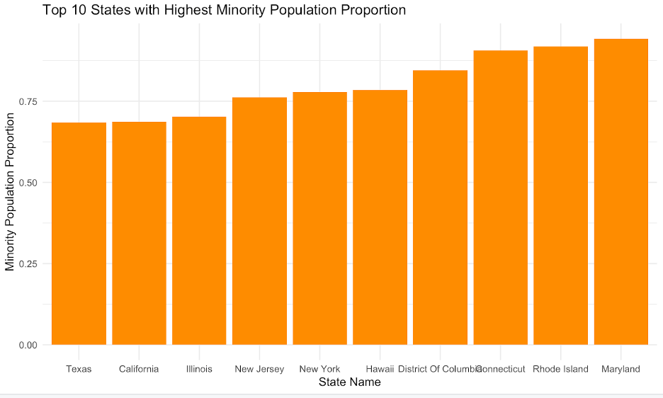
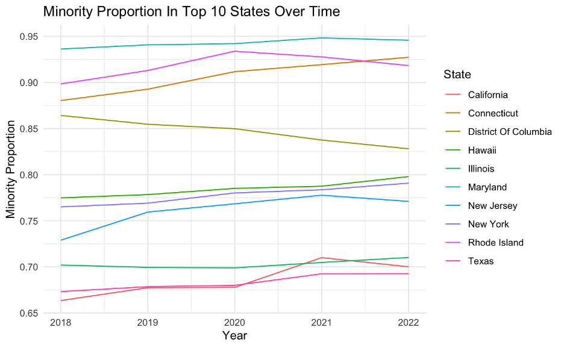
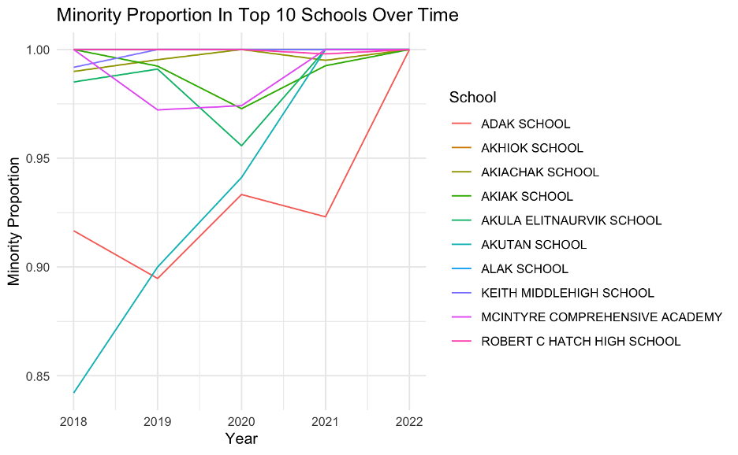
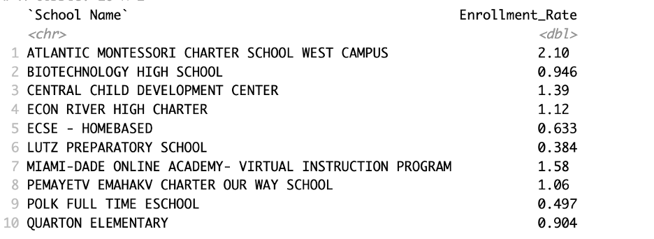
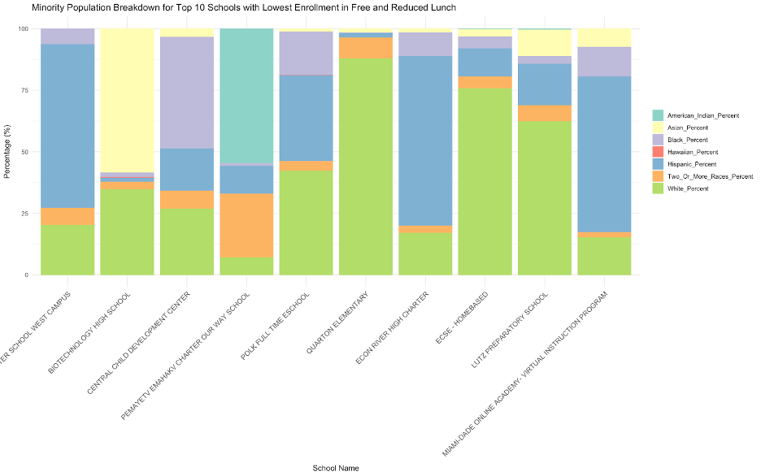
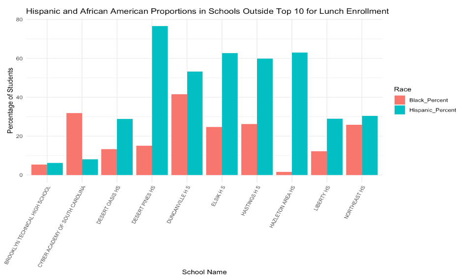
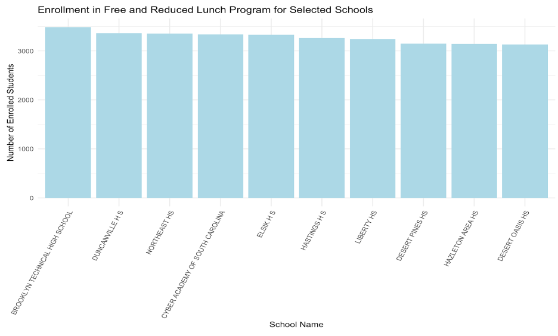

Big Picture
Who’s Really at the Table? Connection between Minority populations to Free and Reduced School Lunch Programs
The Free and Reduced-Price Lunch Program aims to improve accessibility to students with low income-level backgrounds. Through our data analysis, we sought to determine if there is a pattern between enrollment in the Free and Reduced-Price School Lunch Program, and the racial demographic of the students enrolled.
Thesis: This study examines whether enrollment in government provided Free and Reduced Lunch programs in public schools is disproportionately higher in areas with predominantly minority populations, exploring the relationship between demographic composition and reliance on government aid for school meals.
What Did We Find?
Our analysis revealed that establishing a clear correlation between the number of minority students and enrollment rates in the Free and Reduced Lunch Programs is challenging. However, as highlighted on our Analysis page, we observed a trend where schools with higher African American and Hispanic populations tend to have higher enrollment rates in these programs. On this page, we delve deeper into this trend and explore other potential factors that may contribute to this pattern.
Texas, Michigan, Florida, and Alaska have the highest number of public schools
 From the above bar chart, we can see that states like Texas, Michigan, Florida, and Alaska have the highest number of public schools. On the other hand, states like District of Columbia, Maine, Rhode Island and North Dakota had some of the lowest public school counts. This could also be explained by other factors such as size of population, socioeconomic demographics, age structure of the state.
Schools and Minority Proportions across States: Maryland leads, whereas District of Columbia witnesses an overall dip
  Races were categorized into “Minority” and “Non-Minority” groups. “White Students” were explicitly classified as Non-Minority, while the following racial categories were identified as Minority: “American Indian/Alaska Native Students,” “Asian or Asian/Pacific Islander Students,” “Hispanic Students,” “Black or African American Students,” “Nat. Hawaiian or Other Pacific Isl. Students,” and “Two or More Races Students.”
Based on this, we created a bar chart for the top 10 with highest minority proportion, with Maryland, Rhode Island and Connecticut leading. Through the line graph above, we notice that states like Maryland have had an overall increase in the proportion of public school students from minority backgrounds from 2018 to 2022. Meanwhile, Rhode Island had an increase from 2018 to 2020, but experienced a dip from 2020 onwards. While we see a slight overall increase in minority proportion across most states, we noticed a gradual decrease from 2018 to 2022 for the District of Columbia.
 We also found the top 10 schools, across the United States, with highest minority proportion enrollment, and analyzed the trends over the same time period of 2018 to 2022. We observed certain schools, like Mcintyre Comprehensive Academy, and Robert C Hatch High School to have the highest minority proportions. Schools like Adak and Akutan, on the other hand, experienced a higher growth rate in student minority proportions.
Breakdown of minority population within top 10 schools with least enrollment
 The schools listed above, filtered to include only those with a student population of 100 or more, have the lowest enrollment rates in the Free and Reduced Lunch Programs. These schools were further analyzed by race to explore whether there is any correlation between a smaller minority population and lower enrollment percentages. The findings are as follows:
 While some schools had a predominantly non-minority population, contrary to our initial hypothesis, many of these schools also exhibited a significant Hispanic or overall minority population. This suggests that other factors may be influencing enrollment in the Free and Reduced Lunch Programs beyond the minority population size.
Breakdown of Hispanic and African American Students in schools not in the top 10 for highest government lunch program enrollment
  Since we found the highest correlation between schools that had the largest population of Hispanic and African American students and the highest enrollment rates in the government programs, we wanted to explore the distribution of Black and Hispanic students across other schools as well. We observe some patterns, for instance, Duncanville H S has moderately high proportions of both Hispanic and Black students (approximately 42% and 54%) and has the second-highest number of enrollments for the Free and reduced lunch program. At the same time, Brooklyn technical high school has the highest enrollment in the lunch program, but has the lowest percentage of Hispanic and Black students.
Findings from our statistical analysis: Minority Representation Influence Free-Lunch Enrollment, with Notable Trends for Native and Asian Students
As part of the analysis, a logistic regression and a negative binomial regression was used to investigate the relationship between minority racial groups and enrollment in free-lunch programs in schools. The logistic regression shows that schools with higher percentages of minority students have exponentially higher chances of a majority of their student body being enrolled in a free-lunch program. The negative binomial regression shows that American Indian/Alaska Native students are associated most with an increased enrollment in free-lunch programs in a particular school, while Asian or Asian/Pacific Islander students are the only group associated with decreased enrollment in these programs at a particular school.